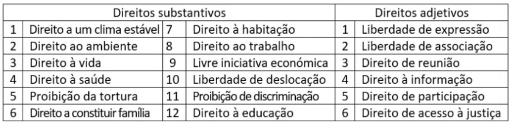
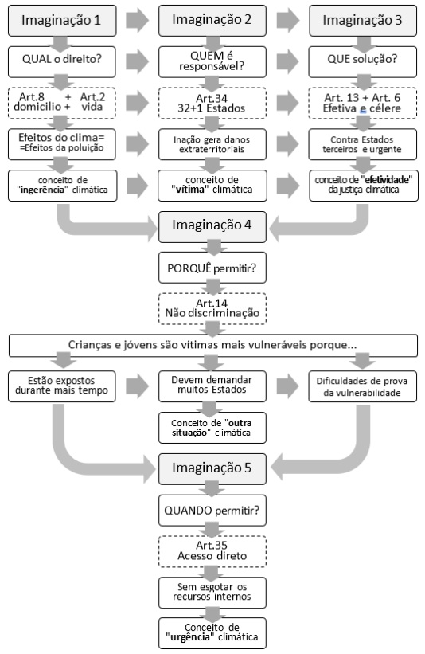

Palestra de abertura do GT 1 – Ativismo climático
ATIVISMO JUVENIL: A LUTA PELO CLIMA CHEGA AOS TRIBUNAIS
A Crise Ecológica como Pano de Fundo
Os relatórios oficiais, com validação científica e reconhecimento político, não deixam dúvidas relativamente à crise ecológica que a humanidade enfrenta. O cenário é de emergência ambiental e climática provocada pelas atividades humanas.
Incêndios, furacões, ondas de calor, seca extrema, inundações, são evidências que se sucedem por todo o mundo e que indiciam que, num futuro mais ou menos breve, podem vir a ocorrer colapsos da biodiversidade, fenómenos climáticos catastróficos, disrupção dos sistemas hidrológicos, incluindo as correntes oceânicas e o degelo, que põem em perigo a saúde dos seres vivos e dos ecossistemas.
Neste cenário, não resta outra opção senão o ativismo.
O Ativismo Altruista
O ativismo ecológico pretende induzir uma mudança de comportamentos, atitudes e práticas individuais e coletivas para um padrão cultural e económico de maior harmonia com a natureza: vidas mais frugais, comunidades mais sustentáveis, economias mais circulares. Em linguagem técnica, diríamos que o ativismo ambiciona reduzir a pegada ecológica, hídrica, carbónica, química, etc dos seres humanos no planeta.
Algumas formas de manifestação do ativismo têm conduzido a confrontos. Considerando que o objetivo do ativismo é a alteração do status quo, os ativistas são vistos como uma ameaça à sociedade, como um perigo para a economia.
Porém, de olharmos pela perspetiva dos ativistas, as suas motivações são puramente altruistas (Elisabeth Lambert, 2022).
O ativismo ecológico é uma forma de altruísmo que tem como principais beneficiários as comunidades vulneráveis, que estão mais expostas aos riscos ambientais e climáticos típicos da situação de emergência e as gerações futuras.
Com efeito, os ativistas não agem apenas em seu nome, mas em nome de toda a comunidade que representam.
Porém, a visibilidade dos ativistas por vezes torna-os alvos de ações retaliatórias, dentro e fora dos tribunais. Nos tribunais são alvo de ações judiais vulgarmente designadas por litigância estratégica ou SLAPP (strategic litigation against public participation, na sigla inglesa).
Fora dos tribunais, podem ser alvo de mobbing laboral ou até, em alguns contextos, atentados contra a integridade física ou a vida. Pela sua gravidade, este fenómeno, típico na América Latina, motivou a adoção de uma norma internacional que estabelece um dever de proteção. Os Estados da região centro e sul Americana estão obrigados a garantir proteção aos “defensores dos direitos humanos em questões ambientais” pelo artigo 9 do Acordo de Escazu1:
“1. Cada Parte garantirá um ambiente seguro e propício no qual as pessoas, os grupos e as organizações que promovem e defendem os direitos humanos em questões ambientais possam atuar sem ameaças, restrições e insegurança.
2. Cada Parte tomará as medidas adequadas e efetivas para reconhecer, proteger e promover todos os direitos dos defensores dos direitos humanos em questões ambientais, inclusive o direito à vida, integridade pessoal, liberdade de opinião e expressão, o direito de reunião e associação pacíficas e o direito a circular livremente, bem como sua capacidade de exercer os direitos de acesso, levando em conta as obrigações internacionais da Parte no âmbito dos direitos humanos, seus princípios constitucionais e os elementos básicos de seu sistema jurídico.
3. Cada Parte tomará medidas apropriadas, efetivas e oportunas para prevenir, investigar e punir ataques, ameaças ou intimidações que os defensores dos direitos humanos em questões ambientais possam sofrer no exercício dos direitos contemplados no presente Acordo”.
Ativismo Ecológico: Conceito e Tipos
Porém, não existe um só ativismo. Existem diferentes modelos e intensidades de ativismo.
O ativismo individual mais básico, corresponde a um o cuidado sistemático e proativo do ambiente nas opções individuais adotando um estilo de vida em maior harmonia com a natureza: reduzindo as lavagens, reutilizando água, economizando energia no aquecimento e arrefecimento das casas, recusando plásticos, separando resíduos, adotando um regime alimentar de baixo impacto, deslocando-se a pé ou em modos suaves.
O ativismo participativo, traduz-se tanto no envolvimento reativo em atividades e momentos de consulta, promovidos pelos decisores públicos ou privados (audiências públicas, participação em procedimentos de avaliação de impacto ambiental, avaliação estratégica ou licença ambiental) como na organização proativa de movimentos ou iniciativas pontuais cuja principal ambição é desencadear transformações estratégicas rápidas e notórias nas estruturas da sociedade, nos modelos de produção, de consumo, de mobilidade, de lazer etc. os quais são considerados insustentáveis.
O ativismo participativo na modalidade proativa pode assumir uma expressão extremista em atividades de desobediência civil, atos de vandalismo ou sabotagem.
O ativismo comunicacional, consiste no desenvolvimento de uma comunicação persuasiva visando transmitir conhecimento e incitar à ação pró-ambiental. A mensagem que é transmitida na comunicação pode ser uma mensagem de ativismo individual ou participativo. Os destinatários da mensagem podem ser as pessoas mais próximas (os educandos) ou a quaisquer estejam no seu entorno (familiares, colegas de trabalho, etc) ou até a desconhecidos através de campanhas presenciais ou online, como os influencers das redes sociais.
O ativismo judiciário, em que os ativistas climáticos recorrem aos tribunais para obter decisões favoráveis à causa climática, contra governos, empresas e organizações. O caso Urgenda, do Supremo Tribunal dos Países Baixos, é o mais conhecido e citado de todos os casos climáticos, ao condenar o governo na Neerlandês por insuficiente ação climática num país que está na vanguarda da transição ecológica, das energias renováveis, da mobilidade sustentável etc.
Ativismo Climático Juvenil
No espectro das iniciativas ativistas que ocorrem no contexto da Europa e do norte global, os jovens são aqueles que protagonizam muitas vezes manifestações mais intensas do ativismo pró- ambiental e, muito especialmente, climático.
Daí a categoria do “ativismo climático juvenil” ter tanta visibilidade. Extinction Rebelion2, Fridays for the Future3, Greve climática estudantil4, Climação5 Climáximo6, são apenas alguns dos movimentos que têm como protagonistas jovens, comprometidos com a causa climática.
Porém, o ativismo juvenil não se manifesta apenas na adesão ao veganismo (ativismo individual), em ações de rua (ativismo participativo) ou nas redes sociais (ativismo comunicacional).
Em diferentes pontos do globo, o ativismo juvenil tem-se manifestado através de ações judiciais atípicas em que os jovens questionam as políticas públicas ou a inação climática dos governos7.
De todos, o caso mais emblemático, por várias razões, é o caso Duarte Agostinho, ainda pendente no Tribunal Europeu dos Direitos do Homem.
Ativismo Juvenil no TEDH
Depois de mais de trezentos casos ambientais julgados pelo Tribunal Europeu dos Direitos Humanos, o Tribunal já desenvolveu bem os argumentos jurídicos que utiliza nas suas decisões a favor do ambiente8. Durante mais de 20 anos, o Tribunal decidiu casos ambientais aplicando a Convenção Europeia dos Direitos Humanos e Protocolos Adicionais na qual não existe qualquer referência expressa ao direito a um ambiente saudável. De forma imaginativa, o Tribunal utilizou o direito ao respeito pela vida privada e familiar e ao domicílio (artigo 8.º), o direito à vida (artigo 2.º), a proibição da tortura (artigo 3.º), o direito a um julgamento equitativo (artigo 6.º), o direito a um recurso efetivo (artigo 13.º), o direito a não ser discriminado (artigo 14.º), e o direito à propriedade (artigo 1.º do protocolo adicional), como algumas das bases jurídicas em que fundou as suas decisões.
Evidentemente, também não há referência jurídica ao clima na Convenção Europeia. Contudo, a falta de uma norma climática não é o principal motivo de preocupação dos cidadãos que abordam o Tribunal em busca de proteção devido à vulnerabilidade climática.
Os contornos do processo Duarte Agostinho e outros contra Portugal e 32 outros Estados9, instaurado em 2020, revelam uma abordagem inédita.
Os demandantes são quatro crianças e dois jovens portugueses, residentes em Lisboa e Leiria10.
Os arguidos são a Noruega, a Rússia, a Suíça, a Turquia, a Ucrânia, o Reino Unido e os 27 Estados da União Europeia. No total, 33 Estados Europeus.
Os demandantes alegam que os Estados estão a violar direitos humanos ao não aplicar as medidas necessárias para alcançar as reduções de emissões de gases com efeito estufa que seriam necessárias para controlar o aumento da temperatura para os 1,5 graus Celsius, negociados e aceites pelo Acordo de Paris.
Os demandantes intentaram a ação perante o Tribunal Europeu, sem terem levado a questão a nenhum tribunal nacional dos 33 Estados. Nem em Portugal, seu país de origem11, nem em qualquer outro Estado europeu levaram o assunto às autoridades judiciais ou administrativas.
Dada uma abordagem tão atípica, esperava-se uma rejeição liminar das intenções dos recorrentes, materializada numa recusa (fundada) de acesso ao Tribunal12.
Esta seria a decisão mais provável, especialmente sabendo que, desde 2013, a Convenção inclui o princípio da subsidiariedade no seu preâmbulo:
“Afirmando que as Altas Partes Contratantes, de acordo com o princípio da subsidiariedade, têm a responsabilidade primária de garantir os direitos e liberdades definidos nesta Convenção e nos seus Protocolos, e que ao fazê-lo gozam de uma margem de apreciação, sob o controlo do Tribunal Europeu dos Direitos Humanos instituído por esta Convenção”13.
Surpreendentemente, ao contrário de tudo o que se esperava, o pedido, apresentado em 7 de setembro de 2020, foi acatado pelo Tribunal em 30 de novembro de 2020. Além de aceitar o caso, o Tribunal Europeu dos Direitos Humanos declarou o processamento como urgente, de acordo com o artigo 41.º do regulamento processual do Tribunal14, e informou os 33 países demandados de que teriam até ao final de fevereiro de 2021, para responder15.
Neste cenário sem precedentes, o desenvolvimento do caso proporciona múltiplas contribuições para a compreensão do litígio climático.
A tramitação do caso Duarte Agostinho
Em fevereiro de 2021, o Tribunal rejeitou uma moção apresentada pelos governos demandados, solicitando ao Tribunal que revertesse a sua decisão de conceder prioridade ao caso e considerasse apenas os argumentos sobre a admissibilidade do pedido. Após o indeferimento, O Tribunal deu um novo prazo, até maio de 2021, para que os Estados apresentassem a sua defesa, tanto sobre a admissibilidade, como sobre o mérito do caso.
Além disso, o Tribunal decidiu permitir a intervenção de terceiros16.
Isto ocorre quando o presidente do Tribunal, no interesse da boa administração da justiça, convida ou permite que terceiros ou outras pessoas, que não o autor, apresentem comentários por escrito17.
Apresentaram os seus pareceres perante o Tribunal, organizações privadas, académicos, associações não governamentais ambientais, organizações de direitos humanos e direitos das crianças, e representantes institucionais18.
Deste modo participam, como Amicus Curiae, professores e investigadores de Universidades da Finlândia19, Suécia, Bélgica, Eslovénia, Reino Unido, México, Canadá, Ruanda, Quénia, Países Baixos e Estados Unidos, apoiados pela Amnistia Internacional20, o Centro Internacional de Direito Ambiental21 em articulação com a União de Cientistas Preocupados22 e o Greenpeace23. Também a ONG Save the Children International24 e outras organizações internacionais de direitos humanos e ambientais25, como o escritório de advocacia na Alemanha que representa a associação ambientalista Climate Action Network – CAN Europe26.
Como representação institucional internacional, participam dois Relatores Especiais das Nações Unidas (o Relator para o Meio Ambiente e o dos Direitos Humanos e Produtos Tóxicos27), e a Comissão Europeia28.
A Comissão Europeia, defende que os instrumentos jurídicos internacionais sobre o ambiente e os direitos das crianças, devem desempenhar um papel importante na definição do âmbito da obrigação dos Estados em prevenir violações dos direitos humanos causadas por danos ambientais. Considera ainda que “o número crescente de reclamações relacionadas com as alterações climáticas proporciona ao Tribunal uma oportunidade única de continuar a trilhar o caminho jurídico para uma implementação mais completa da Convenção e de oferecer proteção real às pessoas afetadas pela degradação ambiental e mudanças climáticas.”
Por último, o Comissário para os Direitos Humanos do Conselho da Europa também apresentou o seu parecer escrito ao Tribunal. A sua posição não deixa margem para dúvidas quanto à competência do Tribunal. Em primeiro lugar, esclarece a relação entre ambiente e direitos humanos e explica que os direitos humanos são a chave para encontrar uma solução urgente para o problema climático. O Comissário acredita que separar as preocupações ambientais por um lado, do direito internacional em matéria de direitos humanos, por outro, é um erro que necessita urgentemente de ser corrigido. Avança também a informação de que 42 dos 47 estados membros do Conselho da Europa reconhecem o direito a um ambiente saudável na lei, e que 29 o têm na Constituição.
No que diz respeito à legitimidade processual, reconhece que os processos sobre alterações climáticas não podem seguir as regras do direito internacional, baseadas na soberania territorial e na jurisdição nacional. As alterações climáticas são um problema transfronteiriço que exige soluções transfronteiriças.
A Comissária considera que uma interpretação estrita e formal dos requisitos de legitimidade ao discutir as violações dos direitos humanos causadas pelas alterações climáticas, especialmente das crianças, teria o efeito, não intencional, de privá-las de qualquer perspetiva razoável de procurar compensação pelas violações dos direitos humanos, dos direitos fundamentais e das liberdades estabelecidas na Convenção.
Quanto aos critérios de admissibilidade do artigo 35.º, n.º 1, os requerentes começam por invocar a urgência da questão que impede a procura de uma solução adequada em cada um dos tribunais nacionais dos 33 Estados. O tempo disponível para tomar as medidas necessárias para evitar que o crescimento global aumente mais de um grau e meio é muito limitado. A probabilidade de os tribunais dos Estados demandados conseguirem conceder uma solução num prazo razoável é muito maior, se o Tribunal Europeu reconhecer a presumível responsabilidade dos Estados pelas alterações climáticas.
O Comissário para os Direitos Humanos do Conselho da Europa, também é de opinião que o conceito de vítima, constante do artigo 34.º, deve ser interpretado de forma evolutiva, à luz das condições da sociedade contemporânea.
Em suma, o Comissário acredita que o número crescente de pedidos relacionados com as alterações climáticas proporciona ao Tribunal uma oportunidade única para continuar a construir o caminho jurídico para a plena implementação da Convenção, conferindo proteção, na vida real, aos indivíduos afetados pela degradação ambiental e pelas alterações climáticas.
Em junho de 2022, o Tribunal Europeu adotou a resolução para que a decisão final fosse tomada pelo Tribunal pleno, composto por 17 juízes, considerando que este caso climático levanta uma questão grave, que afeta a interpretação da Convenção29.
Em 27 de setembro de 2023, a audiência perante o Tribunal Pleno teve lugar em Estrasburgo30.
O discurso preferido do advogado que representa os réus no processo, resume perfeitamente o raciocínio dos Estados.
“Os Estados demandados compreendem muito bem a seriedade do combate às alterações climáticas. Mas os princípios fundamentais do sistema convencional de proteção dos direitos humanos devem ser aplicados e respeitados independentemente da natureza da questão submetida ao Tribunal. Este pedido exige que o Tribunal se afaste desses princípios e exceda o seu mandato. (…) Os demandantes estão, na verdade, pedindo ao Tribunal que construa um novo modelo de jurisdição extraterritorial, contrário aos princípios jurídicos e com o efeito de que, qualquer pessoa no planeta que alegue ser afetada pelas alterações climáticas, possa alegar estar sob a jurisdição de todos e cada um dos Estados réus. Em segundo lugar, este pedido foi apresentado diretamente a este Tribunal sem qualquer tentativa de invocar, e muito menos esgotar, os recursos internos em qualquer país, o que é contrário ao princípio da subsidiariedade. Os tribunais nacionais perderam a oportunidade de se pronunciarem sobre as questões suscitadas por este pedido, incluindo questões de economia nacional e política social e este Tribunal foi privado do benefício desses pareceres. Em terceiro lugar, no que diz respeito à legitimidade processual. Este pedido apresenta uma forma de ação popular. Esta abordagem, se fosse aceite, abriria a porta a uma inflação de reclamações climáticas ao abrigo da Convenção perante os tribunais das partes contratantes e, em última análise, perante este Tribunal. Contrariamente à margem de apreciação, os requerentes procuram impor obrigações abrangentes, com profundas consequências sociais e económicas para os Estados demandados. Além disso, estas obrigações baseiam-se numa certa visão de partilha de encargos, sobre a qual não há consenso entre os Estados e que não está a ser debatida em nenhum parlamento nacional. Os requerentes tentam impor um regime paralelo apenas para os Estados Respondentes mas, sem o consentimento dos Estados Respondentes, correm o risco de minar esse processo internacional. Em suma, os requerentes pedem ao Tribunal que atue como legislador e não como juiz, e que legisle para um desafio global sem ter jurisdição global. O pedido deve ser rejeitado.”
Extraterritorialidade de jurisdição; subsidiariedade da atuação do Tribunal; inadmissibilidade da ação popular; sobrecarga judicial; distribuição de responsabilidade pelas obrigações climáticas; autocontenção judicial são os seis argumentos de peso apresentados pelos Estados réus para justificar a ilegitimidade jurídica do processo que, na opinião dos Estados, viola os princípios básicos do sistema de proteção dos direitos humanos.
Síntese caricatural do caso Duarte Agostinho
O nível de desproteção jurídica que resulta da visão conservadora e tradicionalista dos Estados, torna-se mais nítido se for traduzido numa linguagem clara31, apresentada sob a forma de um diálogo imaginário irónico32, que tornará visível o paradoxo inerente aos seis argumentos do Estado.
Extraterritorialidade
6 Jovens: a causa dos danos que estamos a sofrer não são apenas as emissões locais que ocorrem em Portugal. É a soma de todas as emissões de gases de efeito estufa que ocorrem dentro e fora do nosso país.
33 Estados: sim, mas só podem levar vosso país a tribunal, porque vocês não têm nenhuma relação jurídica com os outros países.
Subsidiariedade
6 Jovens: o nosso Estado não nos protege e não temos acesso à proteção judicial noutros Estados. Precisamos da proteção de um Tribunal internacional.
33 Estados: sim, mas só podem chegar a esse Tribunal depois de terem pedido de ajuda, e não a ter obtido, em todos os tribunais nacionais33. Deve ir a 99 tribunais em 28 idiomas diferentes34, custe o que custar e demore o tempo que demorar, e só então podem acorrer a um tribunal internacional.
Ação popular
6 Jovens: o nosso pedido é feito em representação do interesse de muitas pessoas das gerações atuais e futuras.
33 Estados: sim, mas só podem aceder aos tribunais se forem partes interessadas e tiverem um interesse específico. Não podem ir a tribunal se tiverem um interesse indiferenciado, semelhantes ao de todas as outras pessoas.
Sobrecarga judicial
6 Jovens: precisamos da proteção de um Tribunal internacional.
33 Estados: sim, mas tanto os tribunais nacionais como o Tribunal Europeu já têm muito trabalho. Não podemos permitir que todas as pessoas que sofrem com a inércia climática dos Estados tenham direito de ir a tribunal, porque isso significaria trabalho excessivo para os tribunais.
Distribuição de responsabilidade
6 Jovens: processamos os 33 Estados porque todos são responsáveis.
33 Estados: sim, mas têm de saber o quão responsável é cada Estado. Só os próprios países podem decidir isso. Ainda não decidimos nem sabemos quando o faremos.
Autocontenção judicial
6 Jovens: precisamos de uma decisão que condene os Estados a fazer alguma coisa.
33 Estados: sim, mas quem tem que fazer alguma coisa são os parlamentos nacionais e não os tribunais. A propósito: não existe acordo entre os Estados sobre a distribuição da responsabilidade climática e nenhum parlamento está a discutir o assunto, mas isso pouco importa. O que importa é que os tribunais não podem decidir nada porque não há legislação sobre distribuição de responsabilidade climática.
Este diálogo ficcional serve para demonstrar, de forma caricatural, que a rejeição do acesso ao Tribunal Internacional resulta numa negação de justiça ultrajante e insustentável.
Para os cidadãos, o Tribunal Europeu é a ultima ratio para a proteção dos direitos humanos. É uma solução à qual os cidadãos recorrem in extremis, face à inércia climática generalizada35. A impossibilidade de acesso confirma o desamparo dos cidadãos, resulta no agravamento da injustiça climática e explica a radicalização dos movimentos juvenis de ativismo climático e as manifestações extremistas que começam a eclodir em vários pontos do mundo36.
Ativismo Judicial pelo Clima: os Tribunais numa Encruzilhada
Para aceder à justiça – tanto em geral, como especialmente à justiça climática – as vítimas devem ultrapassar um conjunto de obstáculos: obter representação judicial de um advogado, demonstrar legitimidade processual, encontrar uma norma jurídica de proteção que proteja o seu direito, fornecer provas que comprovem factos, lutar pela execução da decisão, correr o risco de arcar com os custos da justiça… Estes são apenas alguns exemplos de obstáculos bem conhecidos.
Ainda assim, uma das grandes dificuldades – que aliás também é um obstáculo ao acesso à justiça – é a demonstração da competência do Tribunal, quando o pedido trata de questões politicamente sensíveis, como a insuficiência do cumprimento das obrigações climáticas dos Estados. A relutância dos tribunais em decidir questões que, idealmente, seriam da competência dos órgãos políticos e legislativos, é uma dificuldade que as vítimas enfrentam, confrontadas com uma interpretação conservadora e estrita do princípio da separação de poderes.
Numa outra perspetiva, a Comunicação da Comissão ao Parlamento Europeu ao Conselho, ao Comité Económico Social Europeu e ao Comité das Regiões, intitulada “Melhorar o acesso à justiça em questões ambientais na União Europeia e nos seus Estados-Membros” afirma que, para aumentar a confiança nas administrações, é importante ter “contrapoderes institucionais”37.
Na realidade, a contenção judicial, ou autocontenção dos tribunais, é a decisão mais confortável para o poder judicial. Em primeiro lugar, porque evita, desta forma, a complexidade da tomada de decisões sobre questões muito controversas; em segundo lugar, porque evita o risco de gerar reações adversas por parte dos poderes públicos visados pelas decisões; em terceiro lugar, porque ao recusar a competência não contribuem para agravar ainda mais a inegável sobrecarga processual dos tribunais. Pelo contrário, o ativismo judicial, se é verdade que corresponde melhor às expetativas das vítimas vulneráveis, ao conferir proteção judicial aos direitos humanos violados, em tudo o resto, gera tensões: cisões na jurisprudência, devido às diferentes posições interpretativas dos magistrados; risco de reações legislativas contraofensivas38; e, claro, um aumento, ainda maior, do excesso de trabalho dos tribunais, devido ao agravamento do número de casos semelhantes.
Por estas razões, é importante que as questões climáticas sensíveis sejam decididas por tribunais com capacidade para analisar juridicamente questões de âmbito essencialmente político, como é o caso dos Tribunais Constitucionais, do Tribunal de Justiça da União Europeia e do Tribunal dos Direitos Humanos do Conselho da Europa39. Normalmente, o Tribunal de Estrasburgo é um órgão judicial cuja função é questionar políticas e atividades públicas a nível nacional, que possam afetar negativamente os direitos humanos das pessoas.
A doutrina que estuda a atuação da CEDH está dividida entre aqueles que consideram que o Tribunal vai longe demais40 nas suas decisões sobre questões politicamente sensíveis41 (como o direito dos presos ao voto, a proibição de crucifixos nas escolas públicas, o aborto, o terrorismo, por exemplo)42, e aqueles que acreditam que as suas decisões poderiam ser ainda mais ambiciosas43.
Se pensarmos nas atividades que têm sido questionadas no âmbito da proteção do artigo 8.º, sobre o direito à vida privada e à habitação, concluímos que já foram contestadas atividades industriais, projetos de desenvolvimento urbano, infraestruturas de transporte, atividades de extração de petróleo, produção de energia e até atividades de lazer.
Isto explica-se porque, embora seja normal que os Estados tenham uma margem de liberdade para decidir se, onde e quando concedem licenças para a extração de recursos, ou para decidir a localização de indústrias, de entroncamentos rodoviários ou estações ferroviárias, onde e como supervisionam as atividades noturnas, etc., também é normal que, se estas atividades forem suscetíveis de prejudicar gravemente os direitos humanos (nomeadamente pela sua localização ou intensidade), o Tribunal Europeu seja competente. O Tribunal pode condenar os Estados por decisões erradas, por regulamentação insuficiente ou por falta de supervisão ou controlo, que são tratados como casos de “interferência” na vida privada ou no direito à habitação, previsto e protegido pelo artigo 8.º da Convenção.
Especificamente no que diz respeito ao clima, é claro que a abordagem legislativa é a mais adequada para implementar a política climática. Nos Parlamentos nacionais, o diálogo e a negociação estabelecidos entre diferentes visões e ambições climáticas, permitem alcançar um consenso político que concilie posições contraditórias sobre prioridades e que assegure uma boa governança na distribuição das responsabilidades climáticas.
Um dos grandes desafios do caso dos jovens portugueses é que, normalmente, o Tribunal Europeu interpreta o direito nacional no contexto da própria cultura jurídica nacional do Estado. A teoria da margem de apreciação, que permite adaptar a decisão, à cultura e tradição jurídicas de cada sistema nacional, não será tão fácil de aplicar, num processo em que tantos Estados são processados ao mesmo tempo.
Apesar disso, se o nível de proteção do clima através da legislação for muito baixo44, se os planos de combate e adaptação às alterações climáticas forem meramente programáticos, se os objetivos climáticos forem demasiado modestos e se as metas climáticas forem temporalmente muito distantes, os tribunais não podem deixar de cumprir a sua missão.
É aqui que entra a imaginação jurídica. Quando a injustiça da incapacidade dos Estados em proteger as vítimas é substancialmente agravada pela injustiça da ausência de uma decisão dos tribunais, a imaginação jurídica é essencial para alcançar uma configuração aceitável da ação, que permita a intervenção dos tribunais. Ao mesmo tempo, a configuração deve ser persuasiva da importância da pronúncia do Tribunal Europeu, para que este não se recuse a julgar a questão, por se tratar de um problema da competência do legislador ou da administração, e que permita obter uma resposta eficaz para a proteção dos direitos envolvidos, para que as obrigações de redução de emissões, ou de adaptação climática, sejam significativas e produzam resultados mensuráveis.
A Imaginação Jurídica nos Tribunais Internacionais na Europa
Na Europa, o uso da imaginação jurídica é um recurso normal e frequente desde o início da Comunidade Económica Europeia. É conhecida a criatividade jurídica do Tribunal de Justiça da União e a sua contribuição para o desenvolvimento e evolução progressiva do Direito da União45.
O Tribunal de Justiça da União Europeia
Embora as competências das instituições da União Europeia tenham sempre sido, e continuem a ser estatutariamente limitadas às competências transferidas pelos Estados46, a criatividade da jurisprudência do Tribunal permitiu-lhe ir muito longe na definição das relações entre o direito europeu e os direitos nacionais dos Estados-Membros. Um bom exemplo é o princípio da primazia do direito europeu sobre os direitos nacionais.
Quase 60 anos depois, o princípio jurisprudencial da primazia, criado no caso Costa v. ENEL, do ano 196447, continua válido, vigente e com poder para moldar o direito europeu, ao qual se reconhece uma natureza específica.
A força jurídica do princípio da primazia está muito clara no parecer jurídico do Conselho da União Europeia48, embora ele não esteja redigido em nenhum artigo do Tratado.
Em conclusão, a imaginação do Tribunal de Justiça da UE construiu um conjunto de princípios inovadores, que são hoje respeitados e aplicados em todos os tribunais dos Estados-Membros. Além disso, fazem parte integrante da estrutura normativa do Direito da União, e quando ocorre a adesão de novos Estados à União, aderem não só aos Tratados e ao direito derivado, mas também ao direito de origem jurisprudencial, como é o caso do referido princípio49.
O Tribunal Europeu dos Direitos Humanos
Da mesma forma que o Tribunal de Justiça da União Europeia, o Tribunal Europeu dos Direitos do Homem, em Estrasburgo, levou os seus poderes a um ponto em que já não é apenas um intérprete e aplicador do direito convencionalmente estabelecido, mas é também um criador de novas regulamentações jurídicas de origem jurisprudencial, que reforçam o valor e a utilidade do direito convencional.
Partindo de casos concretos, cujos contornos evidenciam a insuficiência do direito estabelecido para garantir uma justiça eficaz, o Tribunal tem desenvolvido soluções jurídicas, cuja força normativa ultrapassa o caso específico, e irradia para futuros casos semelhantes, decididos não apenas por esse mesmo tribunal internacional, também pelos tribunais nacionais.
O estado de emergência ambiental e climática que vivemos, impõe novas perspetivas sobre as funções dos Tribunais. Todos os produtores do direito – seja o direito internacional de origem convencional, seja o direito interno legislado, administrativo ou judicial – têm a obrigação de buscar novos métodos jurídicos, para soluções mais justas e eficazes, para os novos problemas da tríplice crise planetária que atravessamos50.
O princípio jurídico que impulsiona as jurisdições internacionais a assumirem a sua função até agora, na aplicação da lei, é o princípio da efetividade. Tanto o Tribunal de Justiça da União Europeia, como o Tribunal Europeu dos Direitos Humanos, têm a intenção de reforçar a eficácia dos instrumentos jurídicos internacionais que foram criados apesar das soberanias nacionais, para limitar e enfrentar os abusos de poder por parte dos próprios Estados.
Na verdade, se não fosse a ousada interpretação jurídica destes dois tribunais internacionais, as ambiciosas missões da União Europeia e do Conselho da Europa, não teriam sido cumpridas de forma tão eficaz, como têm sido até agora.
No caso específico dos direitos humanos protegidos pelo Conselho da Europa, se o âmbito da proteção do direito à habitação se tivesse limitado à defesa do direito a ter um telhado e quatro paredes, hoje não teríamos a proteção do direito dos indivíduos ao ambiente.
No entanto, a resposta do Tribunal, limitada pelas suas condições de funcionamento, apresenta graves deficiências: a morosidade dos processos51, e o número de vítimas52, são os mais graves.
O que significa que se o Tribunal pretende produzir jurisprudência que seja eficaz no combate aos problemas ambientais e sociais, não pode deixar de introduzir alguma mudança no modelo de justiça que tem aplicado até agora.
Este pode ser o momento de fazer essa mudança.
Da Proteção Ambiental à Proteção Climática na CEDH
Em 1992, quando o Tribunal dos Direitos Humanos considerou, pela primeira vez, que o direito à habitação e à vida privada incluía também o direito de não sofrer interferências ambientais prejudiciais, na sua casa e nos arredores, garantiu a proteção dos cidadãos contra interferências que são cada vez mais frequentes: emissões poluentes que impedem o usufruto da casa, como gases, fumos, águas residuais, odores, ruídos ou radiações. Na sua época, há 20 anos, esta foi uma grande inovação. Com o caso Lopez Ostra53, o primeiro caso ambiental no Tribunal de Estrasburgo, ampliaram-se simultaneamente o âmbito de aplicação da Convenção Europeia, os poderes de cognição do Tribunal e as perspetivas de proteção dos cidadãos.
Por outro lado, nos casos ambientais, até agora, a estrutura da ação ─ as partes no processo, o pedido e a causa de pedir ─ era relativamente convencional. Os autores da ação são cidadãos residentes e nacionais de um Estado membro do Conselho da Europa. O réu é o Estado onde o recorrente-vítima tem domicílio, e onde sofre a interferência ilícita. Pede-se ao Estado, que não se abstenha de proteger, de forma eficaz, os cidadãos vítimas de atividades lesivas ao direito de gozo da sua habitação. Embora os demandantes não sejam uma família, ou um pequeno grupo de cidadãos isolados, mas milhares de cidadãos, as suas queixas têm um alvo: o Estado a que pertencem. Foi o que aconteceu, por exemplo, no caso Cordella de 2019, em que 180 habitantes de Taranto se uniram para processar o Estado italiano por poluição de origem industrial, contra a qual lutavam há mais de meio século, sem conseguir mudar o status quo.
Quando passamos para o contencioso climático, tudo muda.
A originalidade dos casos climáticos
Uma das razões pelas quais os litígios climáticos são tão impactantes é porque se configuram como litígios movidos por pessoas ou grupos vulneráveis contra entidades poderosas.
Os demandantes são, frequentemente, membros de grupos vulneráveis: crianças, idosos, profissionais de atividades particularmente afetadas pelas alterações climáticas, como agricultores ou pescadores, entre outros.
Além disso, muitas vezes, nos litígios climáticos, a causa da ação é a omissão, ou a insuficiência da ação climática nacional ou internacional. Nestes casos, o que deve ser demonstrado é a injustiça da situação atual. Deve ser demonstrado que a exposição aos efeitos das alterações climáticas é particularmente intolerável para os demandantes e que a definição do nível de proteção climática não é simplesmente uma questão política, mas também jurídica. Deve ser demonstrado que existe um dever legal de proteger, e que o direito a ser protegido pode ser reivindicado perante os tribunais.
A insuficiência das políticas climáticas, é demonstrada pela ocorrência de catástrofes meteorológicas ou outros desastres naturais agravados pelas alterações climáticas, que afetam o direito à saúde e à qualidade de vida e, por vezes, o direito à vida dos cidadãos. Portanto, é natural que a ocorrência de grandes e incontroláveis incêndios, tenha sido apresentada como evidência da insuficiência de medidas legislativas, sendo a legislação o primeiro nível de execução das políticas climáticas.
Até ao momento não há grandes desenvolvimentos relativamente à jurisprudência do Tribunal Europeu em matéria ambiental, após o caso López Ostra, onde a jurisdição ambiental do TEDH foi pacificamente reconhecida, tendo o artigo 8.º, sobre o direito à vida privada e domicílio, como porta de entrada.
Porém, a imaginação jurídica no contencioso climático, é absolutamente necessária porque são casos extremamente complexos. No contencioso climático, provar a ilegalidade de uma atividade ou omissão, pública ou privada, não é tão fácil como prová-la em outros tipos de litígio ambiental. A relação causal entre o dano ocorrido (ou que se teme que venha a ocorrer) e uma atividade humana específica, é muito ténue. Assim, a configuração do caso, em todos os seus elementos, deve ser adequada para demonstrar ao Tribunal a injustiça que ocorreu, ocorre, ou irá ocorrer através do clima (fenómenos meteorológicos extremos), ou em virtude das mudanças climáticas (todos os efeitos habituais das atividades humanas são exacerbados54), sendo que o nexo causal pode ser estudado e medido diretamente ou por estimativas.
Nos litígios ambientais em que há danos ao solo, à água, ao ar ou à biodiversidade, os danos podem ser espacialmente limitados ou geograficamente muito extensos, podem ser unicausais ou multicausais, podem ser imediatos ou retardados, mas, em qualquer caso, não são tão difíceis de medir ou estimar. Nos danos ao sistema climático, e nos danos causados pelas alterações climáticas, as emissões de gases com efeito de estufa são difundidas de forma homogénea por toda a atmosfera do planeta, de modo que os efeitos podem ser sentidos nos antípodas. Na realidade, a área geográfica afetada pelas alterações climáticas é todo o planeta. Embora as emissões de gases com efeito de estufa tenham origem especialmente em alguns países do hemisfério norte, isso não significa que os efeitos das alterações climáticas sejam sentidos mais fortemente nos países emissores. Muitas vezes ocorre precisamente o contrário, como acontece no caso dos estados insulares do oceano pacífico sul, vítimas particularmente vulneráveis das emissões de gases com efeito de estufa.
Isto explica o litígio climático que é movido contra grupos de Estados ou organizações internacionais que representam os Estados mais desenvolvidos55. O mesmo acontece com os litígios contra grandes empresas responsáveis por uma quantidade significativa de emissões56. O objetivo é conseguir uma maior efetividade da decisão. Se as medidas climáticas solicitadas perante o Tribunal, forem tomadas em muitos países, ou em grandes empresas, no final, algum efeito da decisão será sentido. Se for apenas um país ─ como Portugal ─ ou alguns países, ou pequenas empresas, nada mudará.
A originalidade do caso Duarte Agostinho
A primeira originalidade é a estrutura da ação, que é substancialmente diferente.
Os demandantes não constituem um grupo grande, nem sofreram interferências climáticas durante mais de meio século. Os demandantes são seis jovens entre os 11 e os 24 anos, que sofreram recentemente os efeitos perturbadores de uma catástrofe climática (incêndios em 2017) e temem que, se nada for feito, voltem a sofrer, no futuro, fenómenos catastróficos maiores e mais frequentes.
A luta perante os tribunais nacionais, nem sequer foi tentada. Na verdade, se tivesse sido tentado apenas nos tribunais de Portugal, o esforço resultaria numa inutilidade jurídica e factual.
Uma inutilidade jurídica, porque muito provavelmente os tribunais diriam que a competência cabe aos poderes legislativo e administrativo, e não aos tribunais. Mesmo que admitissem a sua jurisdição, os tribunais levariam décadas a proferir a decisão final, depois de esgotadas todas as vias.
Uma inutilidade factual, porque, mesmo que o Estado português fosse condenado a reduzir as suas emissões de gases com efeito de estufa, essa redução não seria suficiente para garantir um futuro climático seguro para os jovens. Na verdade, são as emissões agregadas a nível global que contribuem para criar ao nível global, concentrações de gases cujos efeitos catastróficos são percetíveis a nível local.
É por esta razão que, processar um grande número de Estados-Membros como responsáveis pelas emissões que causam as alterações climáticas, é uma estratégia judicial arriscada, mas lógica.
A segunda originalidade do caso, é o momento da ação. A exigência de esgotamento das instâncias ao nível nacional, não foi observada.
Esses aspetos distinguem o processo de outros, como o caso KlimaSeniorinnen v. Suíça57, também pendente no Tribunal Europeu. No caso das senhoras idosas da Suíça, as requerentes exigem a condenação apenas do seu Estado, e nenhum outro. Mais, o risco de perder a vida (artigo 2.º) durante uma onda de calor é iminente. Não é um risco meramente futuro. Por fim, os demandantes esgotaram os recursos judiciais no seu país.
É por esta razão que o caso dos jovens portugueses subverte os pressupostos processuais habitualmente exigidos pelo Tribunal.
O que foi alcançado até agora nos casos ambientais perante o Tribunal de Estrasburgo é uma evolução do conteúdo das normas substantivas que estabelecem os direitos fundamentais: o direito à vida, à habitação, à propriedade, à justiça.
Diferentemente, no caso climático dos jovens portugueses, as normas cuja interpretação deve evoluir, são as regras de acesso à justiça internacional. Pretende-se que o acesso à justiça seja facilitado às crianças e jovens que, pela sua especial vulnerabilidade, têm mais dificuldade em aceder aos tribunais.
Não teria sido difícil para os jovens requerentes, na sua qualidade de vítimas, associarem à sua causa outros jovens, também vítimas de catástrofes climáticas, mas que fossem nacionais e residentes em cada um dos 32 países europeus, membros do Conselho da Europa.
Mas não o fizeram.
Outras vítimas vulneráveis, além dos seis jovens, poderiam ter-se juntado ao grupo de requerentes58.
Mas não o fizeram.
Poderiam ter iniciado ações judiciais nos tribunais dos países réus, argumentado depois que o atraso judicial prejudicaria a eficácia das soluções nacionais.
Mas também não o fizeram.
Com estas caraterísticas, seria natural e expectável que o Tribunal de Estrasburgo, afinal de contas, recusasse o caso, permitindo aos Estados avaliar a questão, em primeira instância, nas suas próprias jurisdições nacionais. Surpreendentemente, o Tribunal teve uma reação inesperada e pouco ortodoxa, ao aceitar o caso e notificar os Estados para apresentarem a sua opinião sobre os factos.
A Convenção Europeia como instrumento vivo
No Tribunal Europeu dos Direitos do Homem, o uso da imaginação jurídica traduz-se essencialmente por uma técnica de interpretação evolutiva59 da Convenção Europeia dos Direitos do Homem que é, nas palavras do Tribunal, um “instrumento vivo”60.
A doutrina do instrumento vivo começou em 1978, com o caso Tyrer v. Reino Unido relativamente ao tratamento degradante resultante da violência nas prisões61. Nas palavras do Tribunal: “o Tribunal também deve lembrar que a Convenção é um instrumento vivo que, como a Comissão corretamente destacou, deve ser interpretado à luz das condições atuais. No caso que lhe é submetido, o Tribunal não pode deixar de ser influenciado pelos desenvolvimentos e pelas normas comummente aceites na política penal dos Estados-Membros do Conselho da Europa neste domínio.”
Ao longo dos anos, o Tribunal de Estrasburgo desenvolveu na sua jurisprudência a doutrina do instrumento vivo, o que lhe permitiu dar uma interpretação atual62 a disposições que já têm mais de 70 anos63.
O instrumento vivo é uma metáfora criativa, que expressa de forma muito sugestiva a ideia de uma interpretação atualista e evolucionista64. A metáfora expressiva criada pelos juízes do Tribunal é usada para persuadir os Estados réus da jurisdição do Tribunal para decidir sobre questões que não estavam realmente no espírito dos redatores originais da Convenção. Em mais de meio século, o mundo mudou. Surgiram novas formas de ameaçar os direitos dos cidadãos e diferentes perceções sobre a gravidade das ameaças.
A interpretação evolutiva é possível, porque a formulação utilizada nas normas, no momento da elaboração da Convenção, foi deliberadamente ampla. Os conceitos fundamentais dos direitos humanos contidos na Convenção são suficientemente flexíveis, para permitir ao Tribunal expandir o conteúdo normativo dos conceitos para cobrir situações novas, mas ainda inegavelmente reconhecíveis como integrando o conteúdo do referido direito.
A doutrina do instrumento vivo, permitiu ao Tribunal subsumir fatos novos e atuais, inimagináveis na década de 1950, às regras de conteúdo aberto da Convenção. Aproveitando que a Convenção não define tortura, nem família, nem domicílio, nem ingerência ilícita, por exemplo, o Tribunal introduziu novas realidades no conteúdo dos conceitos, que são o resultado de duas evoluções:
a) a evolução científica e tecnológica, que tem permitido, por exemplo, a reprodução medicamente assistida ou a inseminação artificial;
b) a evolução da valorização social e ética de comportamentos que já existiam antes, mas que, com as transformações do conceito de dignidade humana, ganharam foros de normalidade. É o caso da homossexualidade, famílias monoparentais, da violação dentro do casamento ou da proteção da privacidade nas redes sociais.
O caso da contaminação ambiental corresponde à segunda situação, uma vez que já não é tolerável nem admissível residir em locais altamente contaminados, nem suportar condições ambientais degradantes, que resultam da poluição ambiental criada pelos operadores económicos e tolerada pelo Estado. Atualmente, esta situação é configurada como uma interferência ilegítima no direito de usufruir plenamente da sua casa (artigo 8.º), ou como uma forma de tortura (artigo 2.º), ou como uma violação do direito à propriedade (artigo 1.º do protocolo 1), ou como uma violação do princípio da igualdade e da não discriminação (artigo 14.º).
Em toda essa evolução, o que o Tribunal fez até agora foi ampliar os conceitos relacionados com os direitos consagrados na Convenção. Os elementos que caraterizam os direitos, e as ações ou omissões que os violam, evoluem paralelamente às transformações e à crescente complexidade da vida em sociedades, que hoje são mais tecnológicas, mais digitais, mais conectadas, mas também mais contaminadas e mais conflituosas. Os poderes públicos ganham mais poderes e maiores responsabilidades na proteção dos mais vulneráveis, perante os novos riscos e desafios lançados por estas transformações.
O caso dos processos climáticos é diferente. Os processos climáticos correspondem a uma evolução científica na compreensão dos danos causados pelo homem ao funcionamento do sistema climático. A evolução científica permitiu determinar a extensão da influência antrópica sobre o clima, Estado por Estado, atividade por atividade.
Foi a ciência climática que nos permitiu reconhecer a forma como as alterações climáticas condicionam a ocorrência de fenómenos extremos e catastróficos. A ciência climática permite estabelecer nexos causais e negar a aleatoriedade climática.
O Climate Action Tracker (https://climateactiontracker.org/) é apresentado pelos demandantes como a ferramenta científica que determina a responsabilidade individual, de cada Estado pela inação climática.
É por isso que no caso dos litígios climáticos, a ideia do instrumento vivo poderá contribuir ainda mais para a evolução dos direitos humanos65.
Fundamentos Climáticos da Doutrina do instrumento vivo
O primeiro fator que explica a necessidade da doutrina do instrumento vivo é a distância temporal entre a data de celebração da Convenção Europeia e os dias de hoje, após mais de 70 anos de evolução socioeconómica e tecnológica.
Mas, para além da época remota da redação e vigência da Convenção, de onde vem a legitimidade do Tribunal Europeu para aplicar a doutrina do instrumento vivo?
A resposta encontra-se no preâmbulo da Convenção, onde as partes signatárias estabeleceram a intenção expressa de que o objetivo do instrumento não seja apenas a proteção dos direitos humanos e das liberdades fundamentais, mas também o seu desenvolvimento.
“Considerando que o objetivo do Conselho da Europa é conseguir uma união mais estreita entre os seus membros, e que um dos meios para atingir esse objetivo é a proteção e o desenvolvimento dos direitos humanos e das liberdades fundamentais”66.
Neste contexto, o desenvolvimento dos direitos humanos e das liberdades fundamentais resulta, por um lado, das alterações introduzidas através de sucessivas revisões da Convenção e da adoção de novos protocolos. Por outro lado, o desenvolvimento dos direitos humanos e das liberdades fundamentais resulta da interpretação evolutiva das referidas normas por parte do Tribunal, o que permite a sua aplicação a todos os casos da vida real, que é chamado a decidir.
Ora, aquilo que torna possível uma interpretação voltada para o futuro e não para o passado67 o facto de os tratados de direitos humanos serem “law-making treaties” ” e não “contractual treaties”68, o que permite ter em consideração a prática posterior dos Estados, tal como estabelecido no artigo 31.º, n.º 3, al. b), da Convenção de Viena sobre o Direito dos Tratados69.
O mesmo Tribunal defende que os direitos devem ser práticos e eficazes e não teóricos e ilusórios, o que explica a visão do Tribunal sobre direitos dinâmicos e evolutivos com base no consenso que é posteriormente gerado70. Quais são as manifestações jurídicas daquilo que o Tribunal tem chamado de “consenso”, “grande maioria”, “regras geralmente reconhecidas” ou “tendência clara”, que exigem uma interpretação atualizada das regras da Convenção Europeia? Alguns exemplos são:
As leis climáticas de Portugal71 e de outros países em aplicação do acordo de Paris72.
O estado de “emergência climática”, declarado formalmente por muitos Estados73 e pela União Europeia74, que expressa a vontade política indubitável de cumprir as obrigações derivadas do Acordo de Paris.
A nível internacional, é mencionada a Declaração Conjunta de cinco organismos de direitos humanos das Nações Unidas, em 2019, sobre direitos humanos e alterações climáticas, que confirma que os Estados têm obrigações extraterritoriais75.
Ao nível do Conselho da Europa, a Recomendação da Assembleia Parlamentar em 2021, sobre o direito a um ambiente seguro, limpo, saudável e sustentável76.
A Recomendação do Conselho de Ministros de 2022, sobre o dever de proteção do ambiente e do clima77.
A Resolução da Assembleia Parlamentar do Conselho da Europa, de 202378, sobre os impactos ambientais e o crime de ecocídio79.
Neste contexto, os textos jurídicos aprovados pelos órgãos do Conselho da Europa podem ser considerados quase como uma espécie de interpretação autêntica da Convenção. Esta situação reforça a legitimidade do Tribunal para apoiar as suas interpretações evolutivas nestes novos instrumentos, com o objetivo de demonstrar o consenso dos Estados membros.
Deste modo, a imaginação jurídica continua a ser útil e necessária para permitir que as regras da Convenção mantenham a sua utilidade e para permitir que os casos climáticos atuais, com os seus contornos peculiares caraterísticos da segunda década do século XXI, sejam resolvidos a partir de regras instituídas em meados do século XX.
A Evolução Jurídica Proporcionada pelo Caso Duarte Agostinho
A análise jurisprudencial dos casos concretos pode ser feita a partir de uma perspetiva clássica, baseada em princípios jurídicos aplicáveis aos direitos fundamentais, ou numa perspetiva menos ortodoxa, baseada na imaginação jurídica. Esta segunda opção permite uma maior evolução dos conceitos jurídicos e dá maior relevância a um instrumento com longos anos de vigência: a Convenção Europeia dos Direitos Humanos.
Direitos e princípios jurídicos subjacentes ao caso Duarte Agostinho
Em abstrato, os direitos fundamentais que os jovens poderiam ter invocado perante qualquer tribunal, na sua dupla qualidade de vítimas das alterações climáticas e de jovens ativistas climáticos, em litígio, são diversos. Se, além do limitado catálogo de direitos substantivos da Convenção, considerarmos também os direitos fundamentais consagrados constitucionalmente, a lista é extensa, chegando a pelo menos 18 exemplos listados na tabela 1, abaixo. O conjunto de direitos está organizado em duas categorias: à esquerda, os direitos fundamentais substantivos, que são diretamente afetados pelas alterações climáticas e pelos seus efeitos climáticos extremos. À direita, os direitos adjetivos, que apoiam e facilitam a reação em defesa dos primeiros, através de ações públicas das vítimas em defesa do clima.
 Figura 1. Direitos fundamentais relacionados com as alterações climáticas.
Esta caso climático poderia ser analisado do ponto de vista dos princípios jurídicos fundamentais, nos quais os demandantes podem basear as suas reivindicações.
a) o princípio da equidade climática intergeracional, que permite às gerações atuais atuarem como responsáveis pela proteção das gerações futuras, através da prevenção de ataques ao bom funcionamento do sistema Terrestre e, especialmente, do sistema climático global.
b) o princípio da precaução climática, que exige medidas de mitigação urgentes para prevenir os sérios riscos associados às alterações climáticas, mesmo que haja dúvidas sobre a distribuição da responsabilidade pelas emissões ou sobre a suficiência das medidas tomadas até agora.
c) o princípio da eficácia no acesso à justiça climática, que exige uma intervenção judicial precoce a nível internacional, quando for provável que a ação dos tribunais nacionais seja insuficiente para garantir uma proteção urgente e eficaz.
Desta forma, o Tribunal transformaria a sua natureza, de um tribunal que intervém em último recurso, para um tribunal que interviria em primeira instância, para encorajar os tribunais nacionais a intervir contra a inércia climática.
Assim, as questões levantadas pelo caso Duarte Agostinho são melhor compreendidas se as olharmos do ângulo dos direitos específicos que requerem uma interpretação imaginativa.
A imaginação jurídica no caso Duarte Agostinho
No processo instaurado perante o Tribunal de Estrasburgo, as vítimas basearam a sua ação essencialmente em seis artigos da Convenção Europeia. Na interpretação de cada um deles, a imaginação jurídica foi amplamente utilizada. A argumentação dos demandantes será apresentada no diagrama seguinte, que explica as condições de acesso ao Tribunal, o conteúdo essencial da regulamentação aplicável e os conceitos jurídicos que dão origem a uma nova interpretação, no contexto da ação climática80.
A leitura do diagrama é feita em blocos, de cima para baixo.
O primeiro quadro, em cinza, indica o número de vezes que a imaginação jurídica é utilizada. No total, serão consideradas cinco.
No segundo quadro, formula-se a questão que deve ser respondida para atender aos pressupostos de aceitação do caso climático pelo Tribunal. Qual é o direito substantivo aplicável? Quem é responsável por agir? Que solução jurídica é necessária? Por quê permitir um regime excecional? Quando permitir o acesso ao Tribunal? Estas são as questões que requerem uma resposta original, no caso Duarte Agostinho.
No terceiro quadro, encontra-se a norma jurídica que serve de base jurídica à reclamação.
No quarto quadro, é apresentado o processo de subsunção dos factos do caso à norma.
No quinto quadro, é introduzido o conceito jurídico que deve ser objeto de uma interpretação flexível e imaginativa, adequada às exigências dos processos climáticos.
Apresenta-se em seguida o diagrama completo, composto por 5 blocos, representando as questões que devem ser abordadas pelo Tribunal na resolução do caso.

Figura 2. Argumentação dos demandantes.
Imaginação 1: Qual é o direito substantivo aplicável?
Os direitos humanos substantivos que estão diretamente em perigo devido à falta de controlo climático por parte dos Estados, são o direito à habitação81 e, em casos mais extremos, o direito à vida82.
Na petição inicial, são amplamente explicados a intensidade e a duração das ameaças climáticas, bem como os efeitos físicos e mentais na saúde e na qualidade de vida dos jovens expostos aos riscos.
O direito a um ambiente saudável, sem graves ameaças ao domicílio, à saúde e à vida das pessoas, foi reafirmado inúmeras vezes pelo Tribunal em diferentes contextos. Após mais de 20 anos, e centenas de casos ambientais na CEDH, é pacífica a interpretação que considera as emissões poluentes como formas de “interferência” ambiental na habitação.
O salto conceptual envolvido em considerar os riscos climáticos catastróficos como um risco real e uma forma de “interferência” inaceitável não é tão grande, razão pela qual este é o ponto menos problemático do caso.
Imaginação 2: Quem é responsável por agir?
Com base na jurisprudência Laizidou v. Turquia83, os demandantes alegam que sofrem danos climáticos causados por atividades localizadas no território de terceiros Estados, os quais não possuem uma política climática suficientemente forte. Os Estados demandados têm o dever de reduzir as suas emissões geradoras de alterações climáticas, independentemente de os efeitos nocivos das emissões se materializarem dentro ou fora do seu território.
Na verdade o conceito de vítima climática não exige ter a nacionalidade do Estado de emissão, não exige residir nesse território, não exige estar sob o poder contratual do Estado, ou ter qualquer outro vínculo com o Estado. Por isso é que os demandantes reivindicam o estatuto de vítima que está “sob a jurisdição” de cada um dos Estados demandados, na aceção do artigo 34.º84.
Na realidade, se processassem apenas Portugal, país de que são nacionais, este país, agindo sozinho, nunca seria capaz de proteger adequadamente as vítimas dos efeitos adversos das alterações climáticas.
Quanto à dificuldade de distribuição de responsabilidades, sugerem os recorrentes que o Tribunal utilize a ferramenta “Climate Action Tracker - CAT”85 para determinar até que ponto os Estados respeitaram, ou não, as suas obrigações climáticas. De acordo com esta ferramenta, as medidas de mitigação adotadas pelo Reino Unido, Suíça, Noruega e todos os estados da União Europeia são insuficientes. As medidas adotadas pela Alemanha são altamente insuficientes. As medidas tomadas pela Rússia, pela Turquia e pela Ucrânia são criticamente insuficientes.
A partir daqui, os demandantes alegam que há uma inversão do ónus da prova, porque os dados climáticos indicam que os Estados não fizeram o suficiente para evitar danos. Dada a falta de distribuição, a nível global, dos esforços, é mais apropriado que os Estados, e não as vítimas, suportem as consequências desta inação. Os Estados terão de demonstrar que adotaram medidas consistentes com a “maior ambição possível” consagrada no artigo 4.º, n.º 3, do Acordo de Paris86.
Em apoio a esta interpretação também são citados o caso Urgenda87 e o caso do genocídio na Bósnia88, para afirmar que se houver dano indivisível, a responsabilidade deve ser compartilhada com base numa contribuição concorrente ou cumulativa de múltiplos sujeitos de direito internacional.
Em resumo, os dados sobre o aquecimento global permitem presumir que as medidas de mitigação adotadas são inadequadas. O argumento de que não é possível determinar a responsabilidade proporcional de cada um dos 33 Estados, enquanto não tiverem chegado a um acordo de partilha de esforço, não pode prejudicar os requerentes. As vítimas do clima gozam de legitimidade extraterritorial89 para processar “terceiros” Estados.
Imaginação 3: Que solução jurídica é necessária?
A procura de uma justiça eficaz é a motivação última para a criação e existência do Tribunal Europeu dos Direitos Humanos. A Convenção estabelece o direito de acesso a uma autoridade nacional, nas formas estabelecidas no artigo 13.º90 quando os direitos tenham sido violados91.
A possibilidade de exercício do direito de acesso ao Tribunal, pela impossibilidade de acesso a todos os tribunais nacionais num prazo razoável, nos termos do artigo 6.º92 é a grande questão deste processo. Na verdade, a questão central no caso Duarte Agostinho é a possibilidade de reconhecimento da jurisdição do TEDH através da mobilização do único instrumento jurídico ─ a Convenção Europeia dos Direitos Humanos e seus protocolos ─ que permite ao Tribunal de Estrasburgo intervir e chegar a uma solução justa para o conflito.
O que acontece, na prática, é que as vítimas têm um acesso muito difícil – se não impossível – aos tribunais de terceiros Estados, dos quais não são cidadãos, residentes ou visitantes. Da mesma forma, as possíveis medidas que poderiam ser adotadas, no futuro, pelo Estado de que são nacionais as vítimas (Portugal) não teriam uma influência significativa na resolução da crise climática.
Estas circunstâncias colocam o TEDH numa posição privilegiada para ir até às vítimas e assim garantir uma decisão judicial eficaz, ordenando aos Estados que adotem uma ação climática mais forte.
Imaginação 4: Por quê permitir um regime excecional?
As vítimas demandantes são crianças e jovens portadores de algumas doenças93, o que demonstra, claramente a injustiça atual e futura da ausência de políticas climáticas fortes por parte dos Estados.
Quatro das crianças sofrem de doenças respiratórias, e todas estão altamente expostas aos riscos associados às alterações climáticas em Portugal94. Os recorrentes relatam redução dos níveis de energia, ansiedade, dificuldades para dormir e incapacidade de ir à escola e fazer exercícios físicos ao ar livre devido ao fumo dos incêndios e durante as ondas de calor. Além disso, as alterações climáticas causarão mais doenças infeciosas, incluindo zoonoses. Estes riscos aumentarão significativamente ao longo da vida e afetarão também as suas famílias e especialmente os filhos que venham a ter no futuro.
No raciocínio das vítimas, não importa que os riscos só se concretizem no futuro. O que importa é que a interferência, que não é justificada, se intensificará durante a sua vigência, o que viola a Convenção e outros instrumentos jurídicos do direito internacional95.
A violação mais importante neste caso é o artigo 14.º96, que impede a discriminação quando existem diferenças materiais no tratamento de pessoas que se encontram em situações semelhantes.
A “situação” no caso dos demandantes é a idade, que, por um lado, coloca as vítimas do clima numa situação de maior vulnerabilidade às alterações climáticas e, por outro, dificulta o acesso à justiça. A maior vulnerabilidade das crianças e jovens advém do seu estado de dependência, o que cria dificuldades reais na procura, em conjunto com as instituições e poderes públicos, de soluções jurídicas para as violações dos seus direitos.
Imaginação 5: Quando permitir o acesso ao Tribunal?
Pretende-se que as crianças e os jovens possam aceder ao Tribunal Europeu dos Direitos Humanos sem se terem previamente dirigido aos tribunais nacionais, nem no seu Estado, nem em qualquer dos outros Estados com os quais afirmam ter estabelecido a relação de vítimas climáticas.
Citando a jurisprudência do Tribunal, os demandantes explicam que se se pretende uma proteção judicial eficaz o artigo 35.º97, sobre o esgotamento dos recursos, não pode ser aplicado de forma “mecânica rígida ou inflexível”. Exigir que as vítimas esgotem todos os recursos seria um fardo irracional e desproporcional, para essas jovens vítimas. Primeiro, porque os demandantes provavelmente não teriam legitimidade processual nos outros 32 Estados, além de Portugal. Segundo, pelo tempo necessário para obter uma decisão, que iria muito para lá do tempo útil disponível. Terceiro, porque as crianças e jovens provêm de famílias com condições modestas, que não teriam condições económicas para interpor ações nos tribunais de todos os Estados envolvidos.
Existe, portanto, uma necessidade excecional de o Tribunal Europeu reconhecer urgentemente a sua jurisdição e isentar os requerentes do esgotamento dos recursos nacionais em cada tribunal nacional. A intervenção da CAN Europe98 no processo é particularmente esclarecedora sobre a insuficiência das jurisdições nacionais99, em contribuir para a resolução da crise climática.
E, sem dúvida, a urgência da questão climática foi reconhecida pelo Tribunal, ao atribuir prioridade absoluta ao caso Duarte Agostinho.
O Risco de uma Avalanche de Processos Climáticos Juvenis
Neste ponto, o risco de o Tribunal ser esmagado por uma avalanche de novos processos climáticos é real. Na verdade, a consequência da aceitação da extraterritorialidade e do não esgotamento dos recursos é o risco de provocar uma avalanche de casos climáticos. A sobrecarga do Tribunal é um dos problemas mais graves que o Tribunal sofre hoje, se considerarmos que o Tribunal, atualmente composto por 46 juízes, protege os direitos de mais de 800 milhões de pessoas, em 46 Estados100. Para resolver esta questão, foi aprovado o Protocolo 14101, que permite que as decisões sejam tomadas por um único juiz, reforça os poderes dos comités de três juízes e introduz um novo critério de admissibilidade para recursos individuais.
Contudo, o mecanismo mais eficaz e apropriado no caso de litígios climáticos é o procedimento de “julgamento piloto”102, como ferramenta do TEDH para a resolução de problemas sistémicos ou estruturais nos Estados-membros do Conselho da Europa. Quando o TEDH recebe múltiplos casos individuais que tratam de problemas semelhantes e que têm a sua origem em violações dos direitos humanos fundamentais garantidos pela Convenção Europeia dos Direitos Humanos, o tribunal pode optar por tratar estes casos em conjunto, através do procedimento de “julgamentos piloto”103.
Desde 2004, o TEDH, ao receber múltiplas petições individuais que levantam questões idênticas ou semelhantes, seleciona um “caso piloto” que represente bem os aspetos comuns a todos os casos. Uma vez proferida a sentença no caso-piloto, os Estados-Membros em causa são obrigados a tomar medidas adequadas para corrigir as violações sistémicas identificadas. Isto pode envolver mudanças legislativas, políticas ou práticas para garantir o respeito pelos direitos humanos, de acordo com as normas estabelecidas pela Convenção Europeia dos Direitos Humanos.
Isto poderia induzir, por via judicial, uma mudança relevante no panorama da política climática dos Estados.
Além disso, para os cidadãos, o TEDH é a ultima ratio para a proteção dos direitos humanos, uma solução a que os cidadãos recorrem in extremis, face à inércia climática generalizada. A impossibilidade de acesso ao Tribunal resultaria, por um lado, no agravamento da injustiça climática e, por outro, no agravamento do desamparo e da frustração dos cidadãos. Esta pode ser uma explicação para a radicalização dos movimentos juvenis de ativismo climático e das manifestações extremistas relativamente o clima, que estão a começar a surgir em todo o mundo104.
Conclusão
O caso climático Duarte Agostinho foge aos parâmetros de um processo normal de direitos humanos no TEDH e baseia-se numa interpretação que é ostensivamente divergente do que tem sido a prática interpretativa habitual perante o Tribunal.
A abordagem da jurisprudência europeia de Estrasburgo sobre o direito climático, do ponto de vista da imaginação jurídica, explica bem o esforço do Tribunal para manter a utilidade e a relevância social do papel de um órgão jurisdicional supranacional nos tempos complexos que vivemos.
A emergência climática formalmente declarada exige a capacidade de utilizar todos os instrumentos jurídicos disponíveis para a proteção dos direitos humanos. Neste contexto, a Convenção Europeia dos Direitos Humanos e a sofisticada jurisprudência desenvolvida pelo Tribunal Europeu dos Direitos Humanos são fundamentais.
Se, no final, a decisão do Tribunal Europeu no caso Duarte Agostinho for favorável às vítimas, permitindo que o TEDH seja a primeira instância e não a quarta, não será uma derrota para os tribunais. Será uma vitória para a justiça.
Referências
Abrisketa Uriarte, Joana (2013). Las sentencias piloto: el Tribunal Europeo de Derechos Humanos, de juez a legislador, Revista Española de Derecho Internacional, Madrid, enero-junio 2013 págs. 73-99.
Aguila, Y. & de Bellis, M. (2021). Un Martien aux Nations Unies ou réflexions naïves sur la gouvernance mondiale de l’environnement. RED, vol. 2, Issue 1 109-118.
Bjorge, E. (2017), The Convention as a Living Instrument: Rooted in the Past, Looking to the Future, Human Rights Law Journal, 36 (7-12), 243-255.
Comisión Europea (2020). Comunicación al Parlamento Europeo, al Consejo, al Comité Económico y Social Europeo y al Comité de las Regiones Mejorar el acceso a la justicia en materia de medio ambiente en la UE y sus Estados miembros.
Commissioner For Human Rights of the Council of Europe (2021). Third party intervention on Human Rights Application No. 39371/20, Duarte Agostinho and others v. Portugal and 32 other States.
Cournil, Christel (Dir.), (2022). Les grandes affaires climatiques, Nouvelle édition [en ligne]. Aix-en-Provence: DICE Éditions, 2020 (généré le 13 juillet 2022).
De Bolle, Catherine (2022). Environmental Crime in the age of climate change, Threat assessment 2022.
Djeffal, Christian (2016). Dynamic and Evolutive Interpretation of the ECHR by Domestic Courts? An Inquiry into the Judicial Architecture of Europe.
Donald, Alice; Gordon, Jane; Leach, Philip (2012). The UK and the European Court of Human Rights, Equality and Human Rights Commission Research report 83.
Eizaga, Lorena Rincón (2008). Human Rights in The European Union. Conflict Between the Luxembourg and Strasbourg Courts Regarding Interpretation of Article 8 of the European Convention on Human Rights, International Law: Revista Colombiana de Derecho Internacional, Bogotá, n. 11: 119-154, mayo de 2008.
European Court of Human Rights (2022). The European Convention on Human Rights, A living instrument.
European Court of Human Rights (2023). Practical Guide on Admissibility Criteria, 6-112.
European Court of Human Rights, Background paper for the Judicial Seminar 2020: The Convention as a Living Instrument at 70.
European Court of Human Rights, (2022). Guide on Article 13 of the European Convention on Human Rights, Right to an effective remedy.
European Court of Human Rights, Interpretative mechanisms of ECHR case-law: the concept of European consensus, Human Rights Education for Legal Professionals.
European Court of Human Rights, Resolution on Judicial Ethics, Adopted by the Plenary Court on 21 June 2021.
Fabbri, L., Melacarne, C. (2023). Understanding radicalization in everyday life. Milano : McGraw-Hill Education.
Fisher, Elisabeth (2021). “EU Environmental Law and Legal Imagination”, The evolution of EU Law, Paul Craig, Gráinne de Búrca, Oxford, United Kingdom.
IPCC (2022). Working group II Report on Climate Change 2022: Impacts, Adaptation and Vulnerability, IPCC Sixth Assessment Report.
Letsas, George (2013). Lord Sumption’s attack on Strasbourg: More than Political Rhetoric?, Constitutional reform, Human rights and tagged European Court of Human Rights, Lord Sumption, UK Constitutional Law Association.
Moeckli, Daniel; white, Nigel (2018). Treaties as ’living instruments, Conceptual and contextual perspectives on the modern law of treaties (Kritsiotis, Dino; Bowman, Michael) Cambridge University Press, 136-171.
Oloo, Anne; Vandenhole, Wouter (2021). Enforcement of extraterritorial human rights obligations in the African human rights system, The Routledge Handbook on Extraterritorial Human Rights Obligations, Routledge 140-150.
Peñalver I Cabré, Alexandre (2022). The role of citizens and Non-Governmental Organizations in climate litigation at national level, Understanding vulnerability in the context of climate change, Maria del Mar Campins Eritja. Rahma Bentirou Mathlouthi, Atelier, 49-64.
Rahman, Mohammad Habibur (2019). Doctrine of Living Instrument: an Inevitable Doctrine to Keep European Convention on Human Rights Alive, Lexkhoj Research Journal of Law & Socio-Economic Issues, volume 1 Issue-IV.
Reiertsen, M. (2022). Effective Domestic Remedies and the European Court of Human Rights: Applications of the European Convention on Human Rights Article 13. Cambridge: Cambridge University Press.
Schleussner, Carl-Friedrich; Menke, Inga; Theokritoff, Emily; Van Maanen, Nicole; Lanson, Alexandrine (2020). Climate Impacts in Portugal, Climate Analytics, 1-43.
Theil, S. (2017). Is the ‘Living Instrument’ Approach of the European Court of Human Rights Compatible with the ECHR and International Law?, European Public Law, 23, 587-614.
Torre-Schaub, Marta (2023). Climate Change Risk and Climate Justice in France: The High Administrative Court as Janus or Prometheus?, European Journal of Risk Regulation 1–15.
Tsarapatsanis, Dimitrios (2021). Human Rights beyond Ideal Morality: The ECHR and Political Judgment, Laws - Special Issue, How Judges Think about Human Rights: Legitimacy and Political Judgment, 10, 77, 1-23.
Zrinski, Maša Marochini (2014). The interpretation of the European Convention on Human Rights, Zbornik radova Pravnog fakulteta u Splitu, 2014, 51, str. 63-84.
Disponível em: https://repositorio.cepal.org/server/api/core/bitstreams/29b2d738-4090-45c5-a289- 428b465ab60c/content.↩︎
https://www.facebook.com/greveclimaticaestudantil/?locale=pt_BR↩︎
https://www.facebook.com/people/ClimA%C3%A7%C3%A3o-Centro/100081409202998/↩︎
Nos EUA, o caso Juliana, no Canadá, o caso La Rose na Austrália, o caso Youth Verdict↩︎
Um guia atualizado da jurisprudência ambiental do Tribunal está disponível em https://ks.echr.coe.int/documents/d/echr-ks/guide_environment_fre (o acesso a todos os links deste capítulo foi feito em 7 de novembro de 2023).↩︎
Requerimento nº 39371/20. Este texto foi escrito após a audiência na Grande Secção, mas antes da decisão final, quando o caso ainda estava pendente no Tribunal Europeu.↩︎
Leiria é uma cidade muito afetada pelos incêndios que em 2017 destruíram uma floresta plantada há quase 700 anos, com relevância ambiental e histórica e causaram mais de 100 mortes.↩︎
Portugal dispõe de uma lei de ação popular (Lei n.º 83/95, de 31 de agosto, alterada em 2015), que permite a qualquer cidadão, independentemente de ter ou não interesse direto na ação, acessar os tribunais em defesa dos valores estabelecidos no artigo 52.º da Constituição da República Portuguesa: saúde pública, meio ambiente, qualidade de vida, proteção do consumo de bens e serviços, património cultural e domínio público.↩︎
Tribunal Europeu dos Direitos Humanos (2023) “Guia Prático sobre Critérios de Admissibilidade” (Practical Guide on Admissibility Criteria).↩︎
Disponível em: https://www.echr.coe.int/documents/d/echr/protocol_15_fra.↩︎
Artigo 41.º – Ordem da apreciação das queixas Na determinação da ordem segunda a qual os casos devem ser tratados, o Tribunal tem em consideração a importância e a urgência das questões suscitadas com base nos critérios por si definidos. A Secção ou o seu Presidente podem, contudo, derrogar a aplicação destes critérios e conceder um tratamento prioritário a uma queixa particular.↩︎
Disponível em: https://hudoc.echr.coe.int/eng#%22appno%22:%2239371/20%22,%22itemid%22:%22001- 206535%22.↩︎
Artigo 36.º “Intervenção de terceiros: 1. Em qualquer assunto pendente numa secção ou no tribunal pleno, a Alta Parte Contratante da qual o autor da petição seja nacional terá o direito de formular observações por escrito ou de participar nas audiências. 2. No interesse da boa administração da justiça, o presidente do Tribunal pode convidar qualquer Alta Parte Contratante que não seja parte no processo ou qualquer outra pessoa interessada que não o autor da petição a apresentar observações escritas ou a participar nas audiências. 3. Em qualquer assunto pendente numa secção ou no tribunal pleno, o Comissário para os Direitos do Homem do Conselho da Europa poderá formular observações por escrito e participar nas audiências.↩︎
Introduzido em 01/06/2015, o artigo 44.º das normas do Tribunal sobre intervenção de terceiros estabelece que qualquer Parte Contratante que não seja parte no procedimento, ou o Comissário do Conselho da Europa para os direitos humanos, poderá apresentar alegações por escrito. “Artigo 44.º Intervenção de terceiros 3 - a) Uma vez comunicada uma queixa à Parte contratante requerida nos termos do artigo 51.º, n.º 1, ou do artigo 54.º, n.º 2, alínea b), o Presidente da Secção pode, no interesse de uma boa administração da justiça, conforme previsto no artigo 36.º, n.º 2, da Convenção, convidar ou autorizar outra Parte contratante que não seja parte na instância ou qualquer pessoa interessada que não o requerente, a apresentar observações escritas ou, em circunstâncias excecionais, a participar nas audiências”.↩︎
Disponível em: https://youth4climatejustice.org/case-documents/.↩︎
Que consideram esta uma oportunidade importante para o Tribunal estabelecer princípios para a aplicação da sua jurisdição em casos climáticos. Discute a distribuição do ónus da prova e os aspetos da extraterritorialidade, dada a situação de especial vulnerabilidade em que se encontram as crianças.↩︎
Que falam sobre os instrumentos do Direito Internacional e os poderes dos tribunais internacionais para lidar com os riscos de danos transfronteiriços a que as crianças estão expostas.↩︎
Que apresentem dados científicos sobre a gravidade das alterações climáticas e os deveres dos Estados.↩︎
Esta ONG apresentou as suas observações escritas sobre a necessidade de agir para proteger os direitos das crianças, dada a natureza sistémica da ameaça representada pelas alterações climáticas.↩︎
Apresentam o tema dos direitos humanos e os danos das mudanças climáticas.↩︎
Climate Action Network - Europe foi responsável pelo caso climático no Tribunal de Justiça da União Europeia e, como terceiro na CEDH, apresenta argumentos detalhados sobre a ineficácia da proteção dos direitos fundamentais envolvidos, demonstrando a falta de soluções nos direitos nacionais dos 33 Estados demandados.↩︎
Na contribuição como Amicus Curiae, destaca-se o efeito dos princípios da precaução, de prevenção de danos e da obrigação de respeito extraterritorial aos direitos humanos.↩︎
Apresentou observações escritas explicando a política climática da União Europeia e a relação com as políticas dos Estados e a distribuição de responsabilidades.↩︎
Artigo 30.º – “Devolução da decisão a favor do tribunal pleno. Se um assunto pendente numa secção levantar uma questão grave quanto à interpretação da Convenção ou dos seus protocolos, ou se a solução de um litígio puder conduzir a uma contradição com uma sentença já proferida pelo Tribunal, a secção pode, antes de proferir a sua sentença, devolver a decisão do litígio ao tribunal pleno.”↩︎
O registo das quase 5 horas de gravações das audiências está disponível aqui: https://www.echr.coe.int/fr/w/duarte-agostinho-and-others-v-portugal-and-others-no- 39371/20- e também em https://www.echr.coe.int/webcasts-of-hearings.↩︎
No Brasil, a Lei n.º 18246, de 01 de Dezembro de 2022, do Estado do Ceará, estabelece a Política Estadual de Linguagem Simples e as diretrizes para aplicá-la. O anexo único concretiza o “Direito a entender”↩︎
O uso da ficção com um toque de ironia, em textos jurídicos, é um recurso estilístico eficaz para dar visibilidade a algumas situações jurídicas flagrantemente injustas e manifestamente incompreensíveis. Ver, por exemplo, o texto de Yan Aguila e Marie-Cécile de Bellis, sobre um marciano que visita as Nações Unidas. Águila, Y. & de Bellis, M. (2021). Un Martien aux Nations Unies ou réflexions naïves sur la gouvernance mondiale de l’environnement. RED, vol. 2, Issue 1 109-118.↩︎
Imaginando que os demandantes tenham que esgotar 3 instâncias judiciais em 33 Estados.↩︎
São as 24 línguas oficiais dos 27 países da União Europeia, com mais 4 línguas: Norueguês, Russo, Turco e Ucraniano.↩︎
Peñalver I Cabré, Alexandre (2022) “The role of citizens and Non-Governmental Organizations in climate litigation at national level”, Understanding vulnerability in the context of climate change, Maria del Mar Campins Eritja. Rahma Bentirou Mathlouthi, Atelier, 49-64.↩︎
Fabbri, L., Melacarne, C. (2023) Understanding radicalization in everyday life Milano: McGraw-Hill Education.↩︎
Um exemplo paradigmático de retrocesso jurídico foi a introdução de uma emenda constitucional na Constituição brasileira, admitindo excecionalmente a legalidade da “vaquejada”, festa popular muito turística e típica do Nordeste do Brasil onde um boi é perseguido e torturado numa arena por um cowboy a cavalo. A Emenda 96/2017, que acrescentou o novo número 7 ao artigo 225 da Constituição Federal, seguiu a decisão, proferida em 2016, do Tribunal Constitucional Brasileiro (na ação direta de inconstitucionalidade número 49.839) que declarou inconstitucional a Lei 15.299/2013 do Estado do Ceará, que regulamentou a festa, também designada “farra do boi”. A base legal para a decisão do Tribunal Constitucional foi a violação do artigo 225, n.º1 VII da Constituição Federal. A resposta legislativa foi a introdução na Constituição de uma exceção à regra de proteção do bem-estar animal. A nova norma constitucional estabelece que as atividades esportivas que utilizam animais não são práticas cruéis para os animais, desde que sejam manifestações culturais. Ficam assim salvaguardadas as referidas atividades com gado, mas também as lutas de galos, por exemplo.↩︎
European Court of Human Rights, Resolution on Judicial Ethics, Adopted by the Plenary Court on 21 June 2021.↩︎
Donald, Alice; Gordon, Jane; Leach, Philip (2012). The UK and the European Court of Human Rights, Equality and Human Rights Commission Research report 83.↩︎
Theil, S. (2017). Is the ‘Living Instrument’ Approach of the European Court of Human Rights Compatible with the ECHR and International Law?, European Public Law, 23, 587-614.↩︎
Letsas, George (2013). Lord Sumption’s attack on Strasbourg: More than Political Rhetoric?, Constitutional reform, Human rights and tagged European Court of Human Rights, Lord Sumption, UK Constitutional Law Association.↩︎
Uma explicação detalhada, com exemplos, pode ser vista em Tsarapatsanis, Dimitrios (2021). Human Rights beyond Ideal Morality: The ECHR and Political Judgment, Laws - Special Issue, How Judges Think about Human Rights: Legitimacy and Political Judgment, 10, 77, 1-23.↩︎
No direito convencional da União Europeia, o elevado nível de proteção ambiental está consagrado três vezes para evitar precisamente uma harmonização mínima que poderia ocorrer quando se legisla apesar da existência de visões muito diferentes de um problema. As consagrações do princípio de um elevado nível de proteção são: Artigo 114.º, n.º 3, do Tratado sobre o Funcionamento da União Europeia: “A Comissão, nas suas propostas previstas no n.º 1 em matéria de saúde, de segurança, de proteção do ambiente e de defesa dos consumidores, basear-se-á num nível de proteção elevado, tendo nomeadamente em conta qualquer nova evolução baseada em dados científicos. No âmbito das respectivas competências, o Parlamento Europeu e o Conselho procurarão igualmente alcançar esse objetivo. Artigo 191.º, n.º 2, do Tratado sobre o Funcionamento da União Europeia: “A política da União no domínio do ambiente terá por objetivo atingir um nível de proteção elevado, tendo em conta a diversidade das situações existentes nas diferentes regiões da União. Basear-se-á nos princípios da precaução e da ação preventiva, da correção, prioritariamente na fonte, dos danos causados ao ambiente e do poluidor-pagador.” (Todos disponíveis em: https://eur-lex.europa.eu/resource.html?uri=cellar:9e8d52e1-2c70-11e6-b497-01aa75ed71a1.0019.01/DOC_3&format=PDF). Artigo 37.º da Carta dos Direitos Fundamentais da União Europeia, sobre a Proteção do Ambiente: “Todas as políticas da União devem integrar um elevado nível de protecção do ambiente e a melhoria da sua qualidade, e assegurá-los de acordo com o princípio do desenvolvimento sustentável.” (Disponível em: https://www.europarl.europa.eu/charter/pdf/text_pt.pdf). Eizaga, Lorena Rincón (2008). Human Rights in The European Union. Conflict Between the Luxembourg and Strasbourg Courts Regarding Interpretation of Article 8 of the European Convention on Human Rights, International Law: Revista Colombiana de Derecho Internacional, Bogotá, n. 11: 119-154, mayo de 2008.↩︎
Fisher, Elisabeth (2021). “EU Environmental Law and Legal Imagination”, The evolution of EU Law, Paul Craig, Gráinne de Búrca, Oxford, United Kingdom.↩︎
Artigo 4.º n.º 1. do Tratado da União Europeia “Nos termos do artigo 5.º, as competências que não sejam atribuídas à União nos Tratados pertencem aos Estados-Membros”.↩︎
Processo 6/64, com acórdão do Tribunal de Justiça de 15 de julho de 1964.↩︎
O parecer data de 2007 e consiste na declaração 17 anexa ao Tratado: “A Conferência recorda que, de acordo com a jurisprudência constante do Tribunal de Justiça da União Europeia, os Tratados e a Lei adotada pela União com base no “têm precedência sobre a legislação dos Estados-Membros, nas condições estabelecidas pela referida jurisprudência”.↩︎
Acto relativo às condições de adesão do Reino de Espanha e da República Portuguesa e às adaptações dos Tratados “A partir da data da adesão, as disposições dos Tratados originários e os actos adoptados pelas Instituições antes da adesão vinculam a Croácia e são aplicáveis na Croácia nos termos desses Tratados e do presente Acto”.↩︎
De acordo com a Convenção-Quadro das Nações Unidas sobre Alterações Climáticas, “A tripla crise planetária refere-se aos três principais problemas inter-relacionados que a humanidade enfrenta atualmente: as alterações climáticas, a poluição e a perda de biodiversidade. Cada um destes problemas tem as suas próprias causas e efeitos e cada problema deve ser resolvido se quisermos ter um futuro viável neste planeta”.↩︎
No caso Fadeyeva v. Rússia (2005), a indústria siderúrgica opera desde a década de 1960. No caso Bacila v. Roménia (2010), a indústria siderúrgica opera desde a década de 1930. No caso Cordella v. Itália (2019), indústria siderúrgica em atividade desde 1965. No caso Giacomelli v. Itália (2006), os problemas com a gestão de resíduos começaram em 1950. No caso Di Sarno v. Itália (2012), a região de Nápoles declarou estado de emergência devido a problemas de gestão de resíduos durante 15 anos (1994 a 2009).↩︎
No caso Kolyadenko v. Rússia (2012), 6 requerentes e mais de 5.000 residentes afetados por inundações repentinas. No caso Fadeyeva v. Rússia (2005), 1 demandante e mais de 60.000 trabalhadores residentes na zona de proteção à saúde da fábrica. No caso Cordella v. Itália (2019), 180 requerentes e mais de 200.000 habitantes que vivem em áreas classificadas como “alto risco ambiental”.↩︎
Disponível em: https://hudoc.echr.coe.int/FRE#%22itemid%22:%22001-57905%22.↩︎
IPCC (2022). Working group II Report on Climate Change 2022: Impacts, Adaptation and Vulnerability, IPCC Sixth Assessment Report.↩︎
Processo C-565/19, Armando Carvalho e outros v. Parlamento Europeu e Conselho da União Europeia, Acórdão do Tribunal de Justiça de 25 de março de 2021.↩︎
Banco de dados Climate Case Chart do Sabin Center para litígios climáticos.↩︎
O caso Carvalho, Cidadãos pelo Clima, teve como demandantes famílias multigeracionais, com membros mais jovens e membros mais velhos, de dentro e de fora da União Europeia, desenvolvendo diferentes atividades profissionais, todas afetadas por diferentes manifestações catastróficas das alterações climáticas, que estão a processar a União Europeia por ação climática insuficiente. Com esta estratégia, procurou-se demonstrar que o clima é um problema transversal e transnacional que assume múltiplas formas e tem uma única causa: a insuficiência da ação de combate às alterações climáticas por parte dos Estados (Processo C-565/19, Armando Carvalho e outros contra Parlamento Europeu e Conselho da União Europeia, Acórdão do Tribunal de Justiça de 25 de março de 2021.↩︎
Djeffal, Christian (2016). Dynamic and Evolutive Interpretation of the ECHR by Domestic Courts? An Inquiry into the Judicial Architecture of Europe.↩︎
European Court of Human Rights (2022). The European Convention on Human Rights, A living instrument.↩︎
Aplicação nº. 5.856/72 com decisão de 25 de abril de 1978.↩︎
Rahman, Mohammad Habibur (2019). Doctrine of Living Instrument: an Inevitable Doctrine to Keep European Convention on Human Rights Alive, Lexkhoj Research Journal of Law & Socio-Economic Issues, volume 1 Issue-IV.↩︎
European Court of Human Rights, Background paper for the Judicial Seminar 2020: The Convention as a Living Instrument at 70.↩︎
Zrinski, Maša Marochini (2014). The interpretation of the European Convention on Human Rights, Zbornik radova Pravnog fakulteta u Splitu, 2014, 51, str. 63-84.↩︎
A interpretação judicial dinâmica de um tratado é uma tentativa de influenciar o comportamento dos Estados para adaptá-lo às mudanças nas condições sociais. Moeckli, Daniel; white, Nigel (2018). Treaties as ’living instruments, Conceptual and contextual perspectives on the modern law of treaties (Kritsiotis, Dino; Bowman, Michael) Cambridge University Press, 136-171.↩︎
Convenção para a Proteção dos Direitos Humanos e das Liberdades Fundamentais.↩︎
Bjorge, E. (2017), The Convention as a Living Instrument: Rooted in the Past, Looking to the Future, Human Rights Law Journal, 36 (7-12), 243-255.↩︎
Reservas à Convenção para a Prevenção e Punição do Crime de Genocídio. Parecer consultivo 1951 representante da CIJ.↩︎
Artigo 31.º Regra geral de interpretação “3 - Ter-se-á em consideração, simultaneamente com o contexto: a) Todo o acordo posterior entre as Partes sobre a interpretação do tratado ou a aplicação das suas disposições; b) Toda a prática seguida posteriormente na aplicação do tratado pela qual se estabeleça o acordo das Partes sobre a interpretação do tratado; c) Toda a norma pertinente de direito internacional aplicável às relações entre as Partes”.↩︎
European Court of Human Rights, Interpretative mechanisms of ECHR case-law: the concept of European consensus, Human Rights Education for Legal Professionals.↩︎
A Lei n.º 98/2021, de 31 de dezembro de 2021, é uma lei que reconhece a emergência climática, que consagra os conceitos de pobreza energética, cidadania climática, diplomacia climática, refugiados climáticos, clima estável como património da humanidade, etc.↩︎
Uma base de dados com mais de 5.000 leis, organizado pelo Grantham Research Institute da London School of Economics e pelo Sabin Center da Columbia Law School. A base de dados é alimentada por tecnologia de aprendizagem de máquina e processamento de linguagem natural.↩︎
São recolhidas numa base de dados.↩︎
Resolução do Parlamento Europeu, de 28 de novembro de 2019, sobre a emergência climática e ambiental (2019/2930 (RSP)).↩︎
Declaração conjunta do Comité para a Eliminação da Discriminação contra as Mulheres, do Comité dos Direitos Económicos, Sociais e Culturais, do Comité para a Proteção dos Direitos de Todos os Trabalhadores Migrantes e dos Membros das Suas Famílias, do Comité dos Direitos da Criança, o Comitê dos Direitos das Pessoas com Deficiência.↩︎
Recomendação 2211 (2021) para ao Comité de Ministros, com uma proposta de texto de Protocolo com 11 artigos, adicional à Convenção Europeia dos Direitos Humanos, sobre o direito a um ambiente seguro, limpo, saudável e sustentável.↩︎
Recomendação CM/Rec (2022)20 do Comité de Ministros aos Estados-Membros sobre os direitos humanos e a proteção do ambiente (Adotada pelo Comité de Ministros em 27 de setembro de 2022 na 1444ª reunião dos Deputados de Ministros).↩︎
Resolução 2477 (2023) sobre os impactos ambientais dos conflitos armados.↩︎
De Bolle, Catherine (2022). Environmental Crime in the age of climate change, Threat assessment 2022.↩︎
Para efeito dos processos no Tribunal Europeu dos Direitos Humanos, definiremos “contencioso climático” como a ação judicial que opõe cidadãos climaticamente vulneráveis (devido à sua idade, profissão, local de residência) contra um ou vários Estados partes, que são considerados os principais responsáveis pelas alterações climáticas, com base na insuficiência de controlo das atividades, públicas ou privadas, que geram emissões ou que criam riscos, devido à omissão de medidas mais fortes de mitigação ou adaptação às alterações climáticas.↩︎
Artigo 8.º da Convenção para a Proteção dos Direitos Humanos e das Liberdades Fundamentais, sobre Direito ao respeito pela vida privada e familiar: “1. Qualquer pessoa tem direito ao respeito da sua vida privada e familiar, do seu domicílio e da sua correspondência. 2. Não pode haver ingerência da autoridade pública no exercício deste direito senão quando esta ingerência estiver prevista na lei e constituir uma providência que, numa sociedade democrática, seja necessária para a segurança nacional, para a segurança pública, para o bem - estar económico do país, a defesa da ordem e a prevenção das infracções penais, a protecção da saúde ou da moral, ou a protecção dos direitos e das liberdades de terceiros.”↩︎
Artigo 2.º, sobre o Direito à vida: “1. O direito de qualquer pessoa à vida é protegido pela lei. Ninguém poderá ser intencionalmente privado da vida, salvo em execução de uma sentença capital pronunciada por um tribunal, no caso de o crime ser punido com esta pena pela lei. 2. Não haverá violação do presente artigo quando a morte resulte de recurso à força, tornado absolutamente necessário: a) Para assegurar a defesa de qualquer pessoa contra uma violência ilegal; b) Para efectuar uma detenção legal ou para impedir a evasão de uma pessoa detida legalmente; c) Para reprimir, em conformidade com a lei, uma revolta ou uma insurreição”.↩︎
Artigo 34.º Petições individuais: “O Tribunal pode receber petições de qualquer pessoa singular, organização não governamental ou grupo de particulares que se considere vítima de violação por qualquer Alta Parte Contratante dos direitos reconhecidos na Convenção ou nos seus protocolos. As Altas Partes Contratantes comprometem - se a não criar qualquer entrave ao exercício efectivo desse direito”.↩︎
O Climate Action Tracker é um projeto científico independente que é fruto de uma colaboração entre duas organizações, Climate Analitics e NewClimate Institute desde 2009. O CAT acompanha a ação climática dos governos e mede-a em relação ao objetivo globalmente acordado do Acordo de Paris de “manter o aquecimento bem abaixo de 2°C e prosseguir esforços para limitar o aquecimento a 1,5°C”. O CAT rastreia mais de 60 países, cobrindo cerca de 85% das emissões globais e cerca de 70% da população mundial.↩︎
“A contribuição sucessivamente determinada a nível nacional de cada Parte representará uma progressão relativamente à contribuição determinada a nível nacional atualmente em vigor para essa Parte e refletirá a mais elevada ambição possível dessa Parte, tendo em conta as suas responsabilidades comuns mas diferenciadas” e capacidades respetivas, à luz das diferentes circunstâncias nacionais” (disponível em: https://unfccc.int/files/meetings/paris_nov_2015/application/pdf/paris_agreement_spanish_.pdf).↩︎
Disponível em: https://www.urgenda.nl/en/themas/climate-case/.↩︎
Disponível em: https://www.icj-cij.org/files/case-related/91/091-20070226-JUD-01-00-EN.pdf.↩︎
Oloo, Anne; Vandenhole, Wouter (2021). Enforcement of extraterritorial human rights obligations in the African human rights system, The Routledge Handbook on Extraterritorial Human Rights Obligations, Routledge 140-150.↩︎
Artigo 13.º Direito a um recurso efectivo: “Qualquer pessoa cujos direitos e liberdades reconhecidos na presente Convenção tiverem sido violados tem direito a recurso perante uma instância nacional, mesmo quando a violação tiver sido cometida por pessoas que actuem no exercício das suas funções oficiais”.↩︎
European Court of Human Rights, (2022). Guide on Article 13 of the European Convention on Human Rights, Right to an effective remedy.↩︎
Artigo 6.º Direito a um processo equitativo: 1. “Qualquer pessoa tem direito a que a sua causa seja examinada, equitativa e publicamente, num prazo razoável por um tribunal independente e imparcial, estabelecido pela lei, o qual decidirá, quer sobre a determinação dos seus direitos e obrigações de carácter civil, quer sobre o fundamento de qualquer acusação em matéria penal dirigida contra ela. (…)”.↩︎
Outras possibilidades seriam os idosos, as gerações futuras representadas pelas suas mães grávidas, os pacientes diagnosticados com stress climático ou os proprietários que perderam os seus bens em eventos climáticos extremos, como temperatura, chuva, vento ou incêndios.↩︎
Schleussner, Carl-Friedrich; Menke, Inga; Theokritoff, Emily; Van Maanen, Nicole; Lanson, Alexandrine (2020). Climate Impacts in Portugal, Climate Analytics, 1-43.↩︎
Além da Convenção, as alegações contra os Estados também incorporam elementos do direito internacional porque a jurisprudência do Tribunal o permite. No caso Demir & Baykara v. Turquia (34503/97 de 12 de novembro de 2008). o Tribunal disse que deveria levar em consideração os elementos do direito internacional na aplicação da Convenção Europeia. Ora, no caso Duarte Agostinho, estão a ser aplicadas a Convenção de Paris (artigo 2.º) e a Convenção das Nações Unidas sobre os Direitos da Criança (o artigo 3.º n.º 1 da Convenção das Nações Unidas sobre os Direitos da Criança estabelece que em todas as ações que envolvam crianças, interposto por quaisquer instituições, incluindo os tribunais, a consideração fundamental é o superior interesse da criança).↩︎
Artigo 14.º Proibição de discriminação: “O gozo dos direitos e liberdades reconhecidos na presente Convenção deve ser assegurado sem quaisquer distinções, tais como as fundadas no sexo, raça, cor, língua, religião, opiniões políticas ou outras, a origem nacional ou social, a pertença a uma minoria nacional, a riqueza, o nascimento ou qualquer outra situação”.↩︎
Artigo 35.º Condições de admissibilidade: “1. O Tribunal só pode ser solicitado a conhecer de um assunto depois de esgotadas todas as vias de recurso internas, em conformidade com os princípios de direito internacional geralmente reconhecidos e num prazo de quatro meses a contar da data da decisão interna definitiva. (…) 3. O Tribunal declarará a inadmissibilidade de qualquer petição individual formulada nos termos do artigo 34° sempre que considerar que: a) A petição é incompatível com o disposto na Convenção ou nos seus Protocolos, é manifestamente mal fundada ou tem carácter abusivo; ou b) O autor da petição não sofreu qualquer prejuízo significativo, salvo se o respeito pelos direitos do homem garantidos na Convenção e nos respectivos Protocolos exigir uma apreciação da petição quanto ao fundo. 4. “O Tribunal rejeitará qualquer petição que considere inadmissível nos termos do presente artigo. O Tribunal poderá decidir nestes termos em qualquer momento do processo.↩︎
O caso Carvalho, também chamado de People’s Climate Case, é o litígio iniciado por 10 famílias de Portugal, Alemanha, França, Itália, Roménia, Quénia, Fiji e a Associação Juvenil Saami Sáminuorra, contra a União Europeia, primeiro no Tribunal Geral e no Tribunal de Justiça da União Europeia. As suas casas, meios de subsistência, ocupação familiar tradicional e cultura são afetados pelas alterações climáticas e processaram as instituições da UE para proteger os seus direitos fundamentais e prevenir alterações climáticas perigosas. Este caso, apoiado pela Climate Action Network - CAN Europe (https://caneurope.org/), não tiveram sucesso, nem no Tribunal Geral, nem no Tribunal de Justiça da União Europeia.↩︎
Reiertsen, M. (2022). Effective Domestic Remedies and the European Court of Human Rights: Applications of the European Convention on Human Rights Article 13. Cambridge: Cambridge University Press.↩︎
O número de Estados-Membros foi alterado em 2022 pela Resolução do Comité de Ministros (CM/Res(2022)2), que decidiu que a Rússia deixaria de ser membro, após 26 anos de participação.↩︎
Disponível em: https://www.ministeriopublico.pt/instrumento/protocolo-no-14-convencao-para- proteccao-dos-direitos-do-homem-e-das-liberdades-0↩︎
Disponível em: https://www.echr.coe.int/documents/d/echr/pilot_judgment_procedure_eng↩︎
A doutrina relata que mais de metade dos processos admissíveis no TEDH são casos semelhantes de violações recorrentes dos direitos humanos dentro dos Estados. Fyrnys, Markus (2011) p. 1231-1260.↩︎
Fabbri; Melacarne (2023) p. 93-107. Gaborit, M. (2020) p. 232–250.↩︎